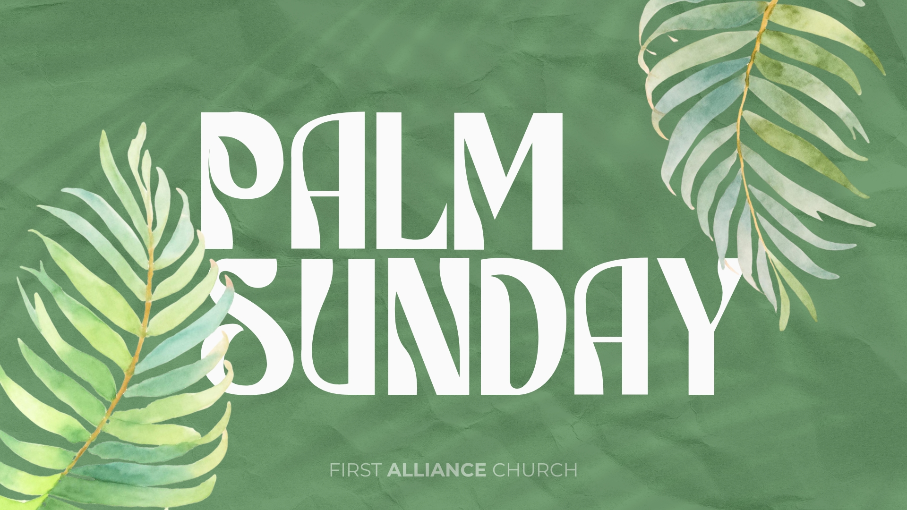
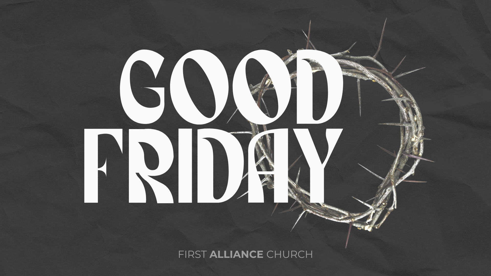
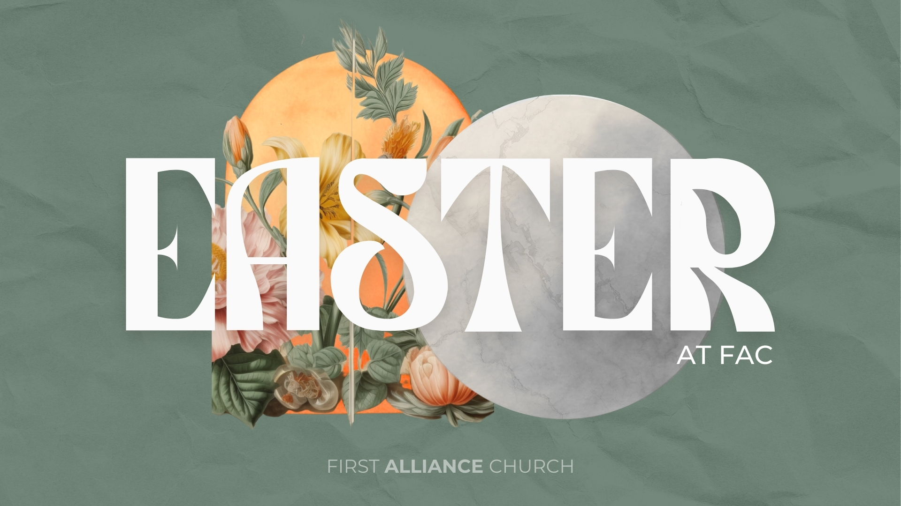

Weekly Internship Report (Feb 9–15, 2026)
facCOMMS meeting notes, upcoming promotions, and Media Team / Easter progress.
Overview
This week was a mix of scheduling + planning for promotions, plus a big push toward Easter direction. I met with Mark for facCOMMS to map out upcoming social posts (and website promos), discussed Media Team next steps (including training + equipment), and started building out Easter graphic concepts so we have strong options ready to pitch.
Quick Summary
Main focus: upcoming social + website promotions (Men’s Break, Women’s Bible Study, 7 Pillars, Intro to FAC), OpusClip sermon reel workflow, Media Team support, and a heavy emphasis on Easter planning + first-round graphic concepts.
facCOMMS Meeting (2/11/26)
I met with Mark Angelotti for our facCOMMS meeting and we worked through what’s coming up, what needs promotion support, and what projects we need to keep moving behind the scenes.
Upcoming Events + Promotions
We mapped out upcoming promotions (especially the ones with multiple post dates) and confirmed that these should be promoted on the website too — not just social.
-
Men’s Break: promote until 2/15
- Posting dates: 2/13 and 2/15 (evening)
-
Women’s Bible Study: 2/13–2/27 (Ashlynn)
- Posting dates: 2/14 (morning) and 2/20
-
7 Pillars of Freedom: 2/13–2/27 (Ashlynn)
- Posting dates: 2/16 and 2/23
-
Intro to FAC: 2/20–3/13
- Posting dates: 2/20 and 2/27
- Lock-In: continue promotion + coordination as details finalize
Note
One key goal this week was making sure our promotion plan stays consistent across platforms — social posts + website promotion working together (instead of feeling disconnected).
Social Media Updates
Reel Collab
A reel was posted by SMT to collab with @fac_erie, which helps boost reach and keeps content connected across accounts.
OpusClip (Sermon Reels)
We discussed starting OpusClip this Sunday using Ron Walborn’s sermon as the first test run (Ashlynn). Plan is to post on Monday 2/16 and Thursday 2/19.
Photos / Drive
- Mark: upload Seniors’ event pictures to Google Drive
Media Team (MT) Progress
We continued to move Media Team planning forward by identifying support interest, training timing, and equipment conversations that need to happen soon.
Team Support
- Karen Keil wants to help
- Plan idea: a training class toward the end of March for the team
Equipment / Next Steps
- Camera: Sony a6700
- Next step: Mark plans to talk to Mike L
Easter Planning + Graphics
I spent a lot of time last week working on Easter planning and building out initial graphic directions. I created additional Easter graphic ideas so we have solid options ready early — and we’re planning to use these as our first pitch.
Easter Meeting
- Easter meeting: Thursday, Feb 12 (“sometime after 3pm” ~Michael S.)
- Attending: Mark, Zay, Michael, and Ashlynn
Graphic Concepts Created
Below are the concepts I made for Palm Sunday, Good Friday, and Easter.



Reflection
It felt productive to get ahead on Easter early — even before everything is finalized — because it gives us options to react quickly once the final direction is confirmed.
Next Steps
- Post scheduled promotions on the planned dates (and mirror the promotion on the website)
- Run the first OpusClip sermon reel workflow using Ron Walborn and post 2/16 + 2/19
- Prep for the Easter meeting (2/12) and bring first-round Easter pitches
- Keep Media Team momentum going (training plan + equipment conversation with Mike L)
- Collect and organize Seniors’ event photos once uploaded to Drive